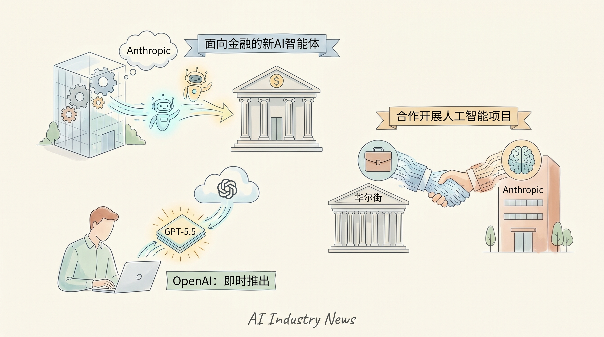

谷歌高级科学家警告欧盟，其数据共享计划可在两小时内逆转。
两克伴AIGC日报
2026-05-06 星期三

本期关注：谷歌顶级差分隐私科学家告诉欧盟，其数据共享计划可以在两小时内逆转。、LiveEO筹集2800万欧元，将其民用基础设施卫星堆栈带入欧洲国防领域、微软的Office和LinkedIn负责人现在负责最新的团队重组、彼得·萨拉林的QuTwo在天使轮融资中估值达到3.8亿美元
📰 行业动态
LiveEO筹集2800万欧元，将其民用基础设施卫星堆栈带入欧洲国防。
微软LinkedIn首席执行官Ryan Roslansky接管了Office和Teams的领导权。
芬兰AI实验室QuTwo在天使轮融资中估值达到3.8亿美元。
OpenAI与Anthropic开始争夺企业AI市场入口。
🔥 今日焦点
近日，Reddit用户u/ex-arman68发布了一则关于Qwen 3.6 27B模型的最新进展。该模型通过引入MTP技术，实现了2.5倍的推理速度提升。这一突破性进展为本地代理编码提供了可行的解决方案，对AI领域具有重要意义。
Qwen 3.6 27B模型采用MTP技术，利用内置张量层进行推测性解码，这在现有GGUF模型中尚属首次。经过在Mac M2 Max 96GB上的本地测试，该模型表现惊人，推理速度提升了2.5倍。这一成果为AI领域带来了以下影响：
在最新的财报中，微软推出了全新的代理商业模式，而苹果则面临着内存和芯片短缺的挑战，尽管其Mac产品线因AI技术的应用而受益。微软的代理商业模式旨在通过授权第三方开发者来扩展其产品和服务，这一策略有望进一步巩固其在企业级市场的地位。苹果的业绩虽然受到供应链问题的拖累，但其Mac产品线在AI技术的推动下展现出强劲的增长势头，这表明AI技术在提升产品竞争力方面的潜力。
这一系列事件对AI领域具有重要意义。首先，微软的代理商业模式为AI技术的应用提供了新的思路，即通过开放合作来加速创新和普及。其次，苹果在Mac产品中融入AI技术，不仅展示了AI在消费电子领域的应用前景，也为其他企业提供了借鉴。此外，苹果面临的供应链问题也提醒了业界，AI技术的发展需要稳定的供应链支持。
📄 重点论文
**核心贡献**: 提出了一种多智能体系统原型，用于流体动力学，通过专门的智能体进行路由规划、工具使用和合成，以解决单智能体系统在工具规格和观测痕迹积累时的有效上下文缩小和端到端可靠性下降的问题。
**与AI Agent的关联**: 为多智能体系统在流体动力学中的应用提供了新的思路，对多智能体系统的工具使用和规划推理有重要意义。
**核心贡献**: 提出了一种名为SciResearcher的深度研究智能体，通过在信息搜索任务上进行后训练，开发出强大的问题解决能力，以推进AI智能体在自动科学发现中的应用。
**与AI Agent的关联**: 为深度研究智能体的开发提供了新的方法，对AI智能体在科学推理领域的应用有重要价值。
**核心贡献**: 提出了一种用于医疗智能体的多轮强化学习环境，通过构建在gym上的环境，为医疗AI智能体的训练提供了广泛的临床领域和专门的工具。
**与AI Agent的关联**: 为医疗AI智能体的训练提供了新的环境，对医疗AI智能体的通用性和可扩展性有重要意义。
🛠️ 产品推荐
Ajelix AI Agent for Work，一款革命性的AI侧边栏工具，专为Google Workspace™打造。它集成了强大的AI能力，能够提供高效便捷的办公体验。通过自然语言交互，AI Agent能够协助用户完成各种复杂任务，如自动整理邮件、生成报告、数据分析等。它不仅能提高工作效率，还能减轻工作负担，让用户专注于核心业务。这款产品的创新之处在于其AI智能，能够实时学习用户习惯，提供个性化服务，为用户提供智能办公的新选择。
***
《政府执行》最新调查显示，联邦IT领导者对更自主的AI工具兴趣日益浓厚，试点活动加速推进。调查显示，超过一半的机构正在探索或计划试点Agentic AI技术。然而，尽管政府机构对Agentic AI充满热情，但受访者指出，不完善的监管政策以及治理框架与实施之间的差距是潜在的障碍。本产品旨在帮助政府机构更好地理解和应用Agentic AI，通过提供先进的AI能力和创新点，解决监管、数据与监督难题，助力机构实现智能化转型。
***